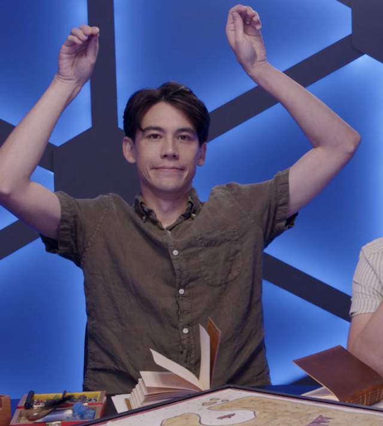

<!DOCTYPE html>
<html>
<head>
    <link rel="preconnect" href="https://fonts.googleapis.com">
    <link rel="preconnect" href="https://fonts.gstatic.com" crossorigin>
    <link href="https://fonts.googleapis.com/css2?family=Monoton&display=swap" rel="stylesheet">
    <link href="https://fonts.googleapis.com/css2?family=Monoton&family=Teko:wght@300..700&display=swap" rel="stylesheet">
    <link href="https://fonts.googleapis.com/css2?family=Ubuntu:ital,wght@0,300;0,400;0,500;0,700;1,300;1,400;1,500;1,700&display=swap" rel="stylesheet">

    <meta charset="utf-8">
    <meta name="viewport" content="width=device-width, initial-scale=1">
    <link rel="stylesheet" type="text/css" href="brennan.css">
    <title>Zac Oyama</title>
</head>
</html>

<body>
    <div class="heading">

        <h1> Zac Oyama </h1>

        

        <p id="box">Zac Oyama may seem quiet, but is the king of comedic timing. Known best for playing extremely loveable characters, Zac is a powerhouse in the dome.</p>

        <div class="clps">
            <details>
                <summary>Where to find Zac</summary>
                <ol>
                    <li> <a href="https://www.dropout.tv"> Dropout.tv </a></li>
                    <li> <a href="https://headgum.com/rotating-heroes">Rotating Heroes Podcast</a></li>
                    <li> <a href="https://www.imdb.com/name/nm4546304/">Zac's IMDB</a></li>
                </ol>
            </details>
        </div>

        <table class="seasonstable">
            <thead>
                <tr>
                    <th>Season Number</th>
                    <th>Season Title</th>
                    <th>Season Type</th>
                    <th>Character Played</th>
                </tr>
            </thead>
            <tbody>
                <tr>
                    <td>1</td>
                    <td>Fantasy High</td>
                    <td>Intrepid Heroes</td>
                    <td>Gorgug Thistlespring</td>
                </tr>
                <tr>
                    <td>3</td>
                    <td>The Unsleeping City</td>
                    <td>Intrepid Heroes</td>
                    <td>Ricky Matsui</td>
                </tr>
                <tr>
                    <td>4</td>
                    <td>Fantasy High: Sophmore Year</td>
                    <td>Intrepid Heroes</td>
                    <td>Gorgug Thistlespring</td>
                </tr>
                <tr>
                    <td>6</td>
                    <td>A Crown of Candy</td>
                    <td>Intrepid Heroes</td>
                    <td>Chancellor Lapin Cadbury/Cumulous Rocks</td>
                </tr>
                <tr>
                    <td>8</td>
                    <td>The Unsleeping City: Chapter II</td>
                    <td>Intrepid Heroes</td>
                    <td>Ricky Matsui</td>
                </tr>
                <tr>
                    <td>13</td>
                    <td>A Starstruck Odyssey</td>
                    <td>Intrepid Heroes</td>
                    <td>Norman "Skip" Takamori</td>
                </tr>
                <tr>
                    <td>14</td>
                    <td>Coffin Run</td>
                    <td>Side Quest</td>
                    <td>Squing</td>
                </tr>
                <tr>
                    <td>16</td>
                    <td>Neverafter</td>
                    <td>Intrepid Heroes</td>
                    <td>Puss in Boots</td>
                </tr>
                <tr>
                    <td>17</td>
                    <td>The Ravening War</td>
                    <td>Side Quest</td>
                    <td>Colin Provolone</td>
                </tr>
                <tr>
                    <td>21</td>
                    <td>Fantasy High: Junior Year</td>
                    <td>Intrepid Heroes</td>
                    <td>Gorgug Thistlespring</td>
                </tr>
            </tbody>
        </table>

        <b id="bold">*entries marked with an asterisk are run on systems other than traditional dungeons and dragons, as listed below</b>
</body>